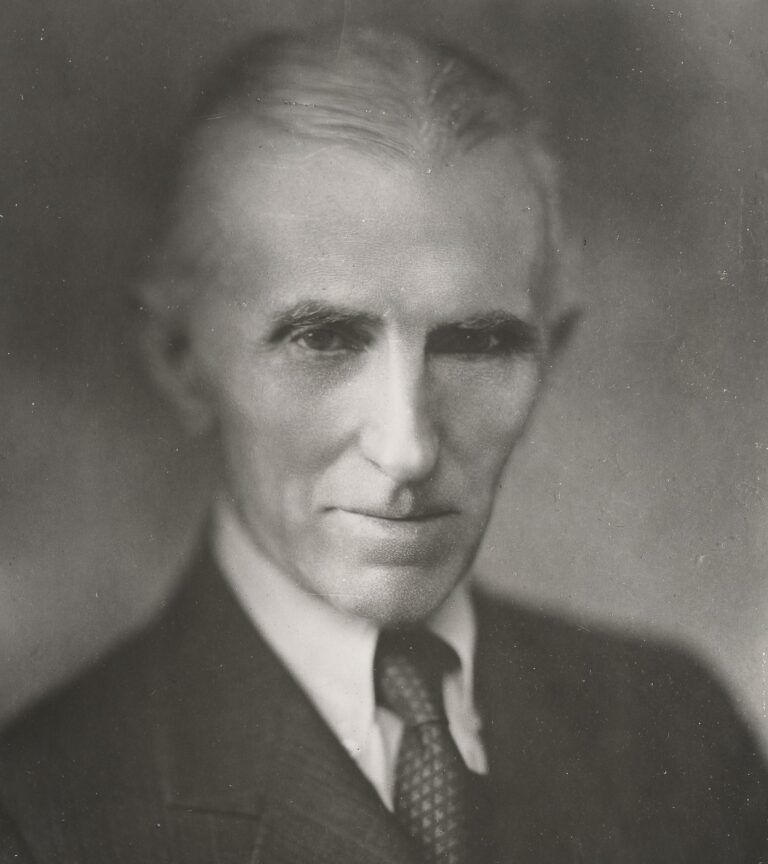

📷 Imagens Históricas
 Fonte: Wikimedia Commons
Fonte: Wikimedia Commons
Tesla com sua bobina em Colorado Springs, 1899 – Wikimedia Commons
Torre Wardenclyffe – Wikimedia Commons
Barco controlado por rádio – Museu Nikola Tesla
 Capa da revista TIME – 1931
Capa da revista TIME – 1931

Nikola Tesla, 76 anos, em outubro 1933.